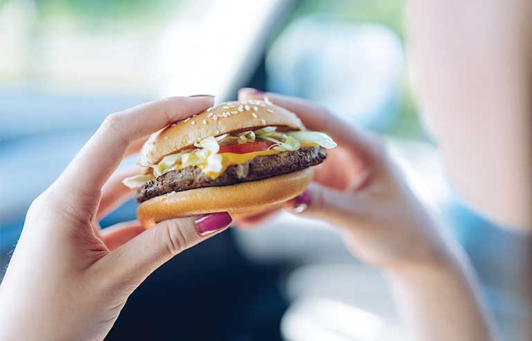
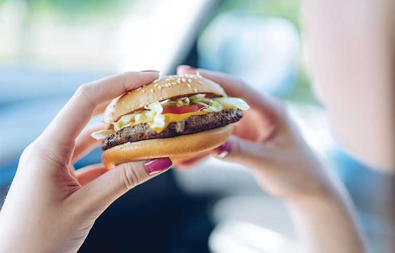
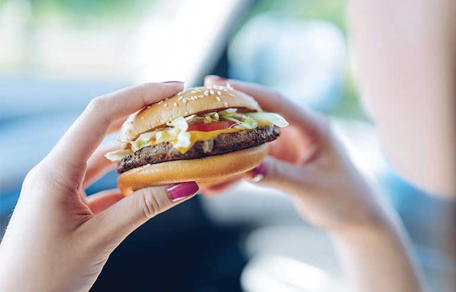

At 17 March, me and my friends was still at university. On that night,my beloved prime minister announced that all universities in Malaysia need to be closed. So, all my friends were packing all our belongings and ready to go home on the next day. So at 18 March we all go home and spend more time with our family.
Mostly at first week of MCO i spent my leisure time by sleeping,eating,watch movies and read comics. As at that time, my lecturer didnt send me any assignment yet. So i spent my time recklessly.

In second week and third week of MCO i spent my time wisely, after mid semester break, my lecturers gave us a lot of assignment and i spent most of my time doing it.